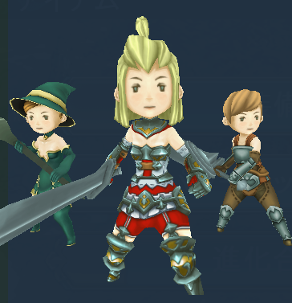

RENDER¶
C#: CWinCtrlRenderIt is a control for the Render Texture.
When the control is generated, generates the camera together.
Objects rendered on the camera is drawn.
注釈
if you have loaded resources, you need to delete them when you close window.
If you forget to delete them,your application memory will leak.
RENDER(Control name) {
Property 1;
Property 2;
:
:
Property n
};
Example¶
WINDOW(255_000_00001) {
STYLE = WINDOW_STYLE_NOTITLEBAR|WINDOW_STYLE_ANCHOR_CENTER;
POSITION = 0,-100;
SIZE = 512,256;
};
RENDER(AVATAR) {
ID = 000_000_00200;
STYLE = ANCHOR_CENTER;
POSITION = 0,0;
SIZE = RELATIVE_SIZE(-64),RELATIVE_SIZE(-64);
CONTENTS_SIZE = 512,512;
};

Property¶
Default value¶
COLOR = 1,1,1,1;
SE_ID = 0;
ID = Control ID¶
Define the control ID.
ID = 001_000_00010;
注釈
If you don’t set the ID, it generates automatically from the hash value.
POSITION = Ｘ，Ｙ¶
It determine the display position . By the setting of STYLE, you can change the criteria for display position.
POSITION = 32,-64;
SIZE = width,height¶
Set the display size.
SIZE = 640,480; //display size
注釈
Properties that must always be set.
CONTENTS_SIZE = width,height¶
Set the size of the Render Texture.
CONTENTS_SIZE = 1024,1024; //render texture size
注釈
It is necessary to set a power value of two and set square.Also,by setting the 2048 value less equal than the maximum size , it increases compatibility.
COLOR = R,G,B,A¶
Set the color.
Set R, G, B in the range of 0～2 .
If you set a value in excess of one , each color component can double the brightness.
Set A in the range of 0～1 .
COLOR1 = R,G,B,A¶
Set the background color.
Set R, G, B, A between 0-1
SE_ID = SE_ID¶
To set the ID of the sound played when pressed . 0 is set as the default. This default value means not to play a sound.
TEX_ID = Render texture ID¶
It is used as a name of the Render Texture. If you set this value to TEXTURE_ZOFFSET of WINDOW property , it is possible to control the rendering order.
STYLE = Flag0|Flag1|..|Flagn¶
You can set the display anchor of control.
Display position anchor flag |
Description |
|---|---|
| ANCHOR_DEFAULT | Set the anchor position in the upper left
Same as ANCHOR_LEFTTOP
The default control center position is set to BASE_LEFT.
|
| ANCHOR_LEFTTOP | Set the anchor position in the upper left
The default control center position is set to BASE_LEFT.
|
| ANCHOR_LEFT | Set the anchor position to the left.
And vertical centering
The default control center position is set to BASE_LEFT.
|
| ANCHOR_LEFTBOTTOM | Set the anchor position to the left.
Located along the lower edge
The default control center position is set to BASE_LEFTBOTTOM.
|
| ANCHOR_TOP | Set the anchor position to the upper side
Centering at lateral.
The default control center position is set to BASE_TOP.
|
| ANCHOR_CENTER | Set the anchor position in the center of the window
The default control center position is set to BASE_CENTER.
|
| ANCHOR_BOTTOM | Set the anchor position at the bottom
Centering at lateral.
The default control center position is set to BASE_BOTTOM.
|
| ANCHOR_RIGHTTOP | Set the anchor position in the upper right
The default control center position is set to BASE_RIGHTBOTTOM.
|
| ANCHOR_RIGHT | Set the anchor position to the right
And vertical centering
The default control center position is set to BASE_RIGHT.
|
| ANCHOR_RIGHTBOTTOM | Set the anchor position to the right
Located along the lower edge
The default control center position is set to BASE_RIGHTBOTTOM.
|
You can set the center position of the control.
Base position change flag |
Description |
|---|---|
| BASE_DEFAULT | It varies depending on the anchor flag .
If you do not specifically set , this value is set .
See the description of each anchor flag
|
| BASE_LEFTTOP | Set the center position to the upper left side. |
| BASE_LEFT | Set the center position to the left side.
and vertical centering.
|
| BASE_LEFTBOTTOM | Set the center position to the bottom left side. |
| BASE_TOP | Set the center position to the upper side.
and horizontal centering
|
| BASE_CENTER | Set the center position to the center. |
| BASE_BOTTOM | Set the center position to the bottom side.
And horizontal centering.
|
| BASE_RIGHTTOP | Set the center position to the upper right side. |
| BASE_RIGHT | Set the center position to the right side.
and horizontal centering
|
| BASE_RIGHTBOTTOM | Set the center position to the bottom right side.
|
Style that limits the function as follows .
Function limit style |
Description |
|---|---|
| HIDE | Hide. |
| DRAG | Enable a dragging. |
| DISABLE | It is not able to pressing the control. And the control color darken. |
| NOHIT | It is not able to pressing the control. |